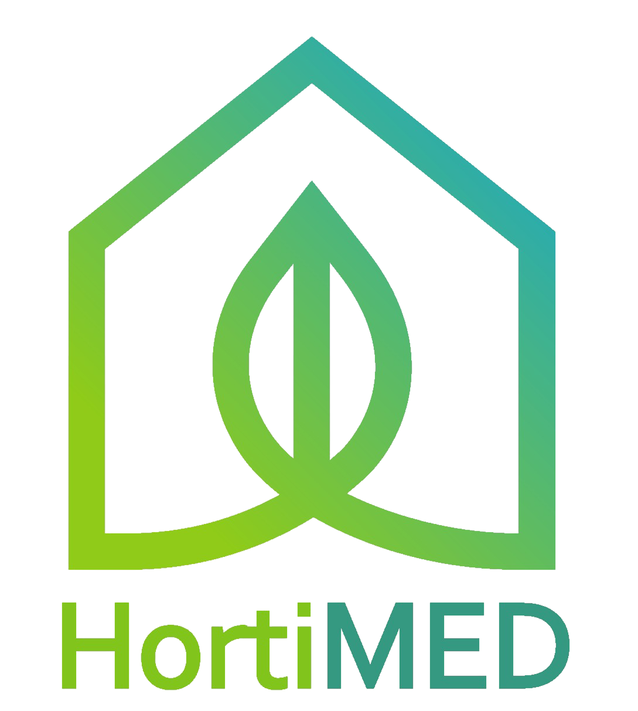

Projects
Objectives
Methodology
Work Plan
Demos
Partners
PRIMA
Partners
Technische Universität Dresden (TUD), GERMANY
Laboratório Nacional de Engenharia Civil (LNEC), PORTUGAL
ERATOSTHENES Centre of Excellence (ERATOSTHENES CoE), CYPRUS
adelphi research gGmbH, GERMANY
Universitat Politècnica de València (UPV), SPAIN
Institut National Agronomique de Tunisie (INAT), TUNISIA
Demo Sites
Resources
Deliverables
enations
Press articles
Newsletters
Project flyer
Project logo
Students
News
Contact
Latest News
Previous
Page 1 of 1
Next
Search News
Search
Latest News